100 % gratuit
À essayer en premierLa chimie en simulations interactives.
Chaque notion de chimie de première année devient une expérience que tu manipules : tu ajoutes une goutte, tu tournes une molécule, tu changes une concentration, et tu vois le résultat tout de suite.
 Titrage et tampon
Titrage et tamponAcides, bases et pH3 simulations
Acides, bases et pHTitrage et tamponAjoute la base goutte à goutte et regarde la courbe de pH, l'équivalence et la zone tampon se dessiner.
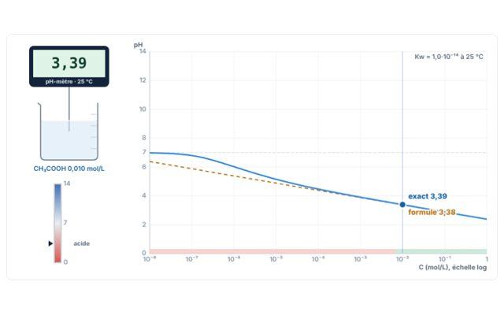
Acides, bases et pHpH-mètreChoisis un acide ou une base, sa concentration et son pKa : le pH et le pourcentage de dissociation s'affichent.
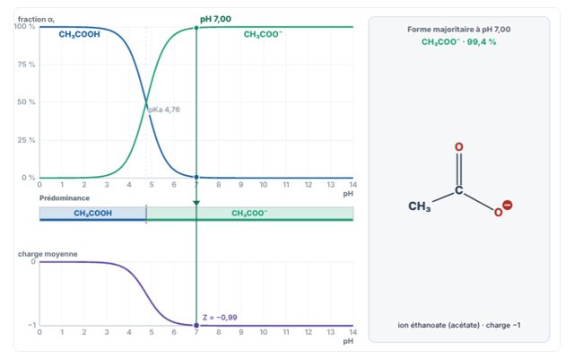
Acides, bases et pHEspèces prédominantes et point isoélectriqueFais glisser le pH et vois quelle forme domine, jusqu'au zwitterion et au pI.
Stœchiométrie, solutions et gaz3 simulations
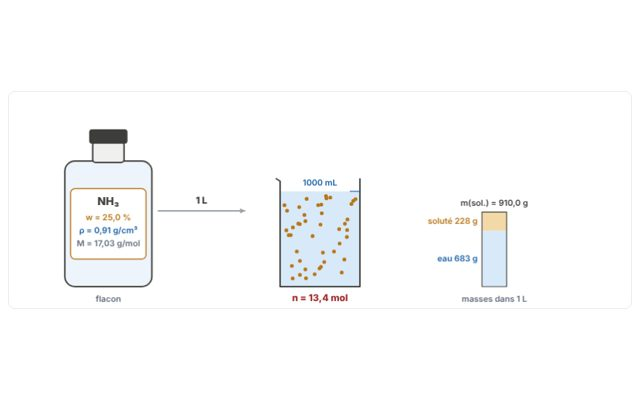
Stœchiométrie, solutions et gazStœchiométrie au laboratoirePourcentage massique, densité, dilution, réactif limitant et rendement, comme à la paillasse.
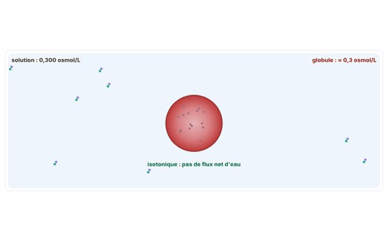
Stœchiométrie, solutions et gazOsmose, cryoscopie et loi de HenryChange le soluté et la concentration : pression osmotique, abaissement du point de congélation et globule rouge.
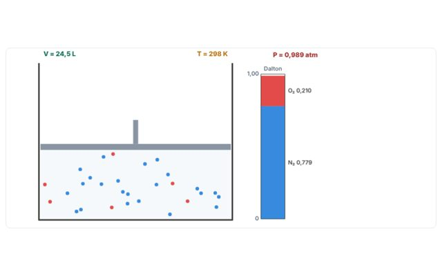
Stœchiométrie, solutions et gazGaz et pressions partiellesUn piston, des particules, la loi de Dalton et l'air des alvéoles.
Atome, tableau périodique et liaison3 simulations
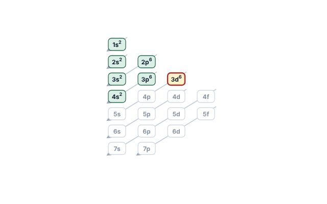
Atome, tableau périodique et liaisonConfiguration électroniqueRemplis les cases quantiques d'un atome ou d'un ion et repère les exceptions.
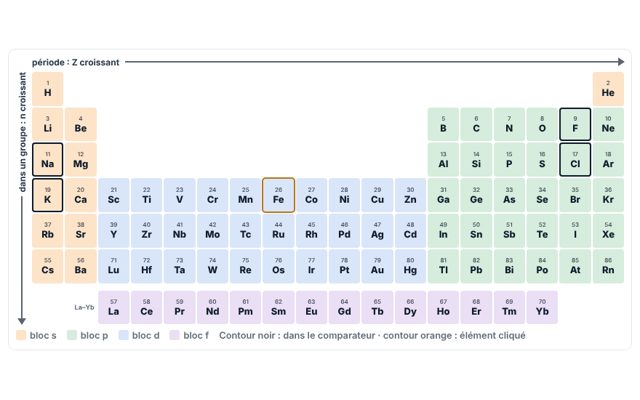
Atome, tableau périodique et liaisonTendances périodiquesRayon, énergie d'ionisation, électronégativité : la carte du tableau en couleurs.
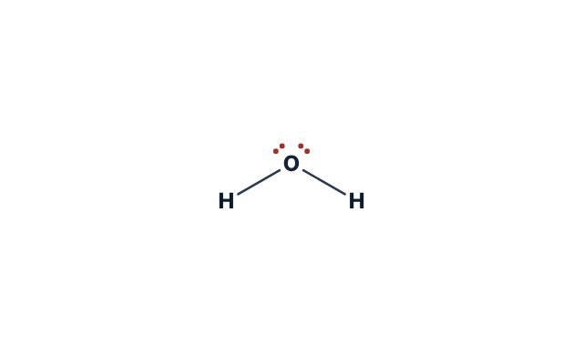
Atome, tableau périodique et liaisonLewis, VSEPR et polaritéStructure de Lewis, géométrie en 3D, angles et moment dipolaire.
Chimie organique8 simulations
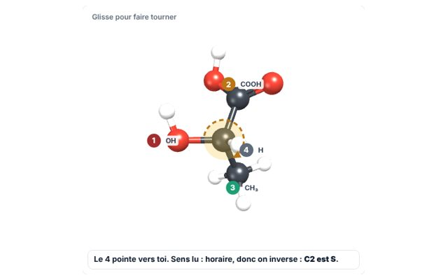
Chimie organiqueStéréochimie en 3DTourne la molécule, attribue R ou S, passe en Fischer et compare énantiomères et diastéréoisomères.
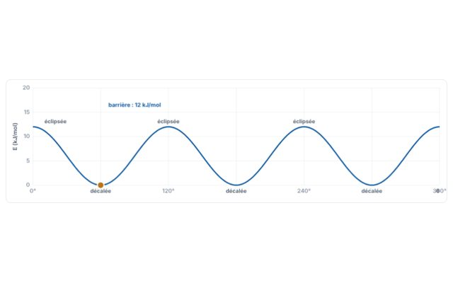
Chimie organiqueConformations : Newman et chaiseFais tourner la liaison, suis l'énergie et bascule la chaise.
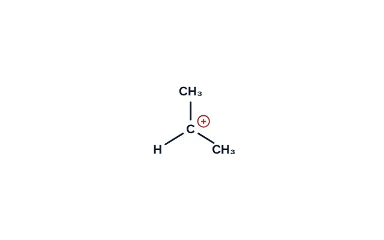
Chimie organiqueEffets électroniquesCarbocations, Markovnikov, orientation sur le benzène et acidité.
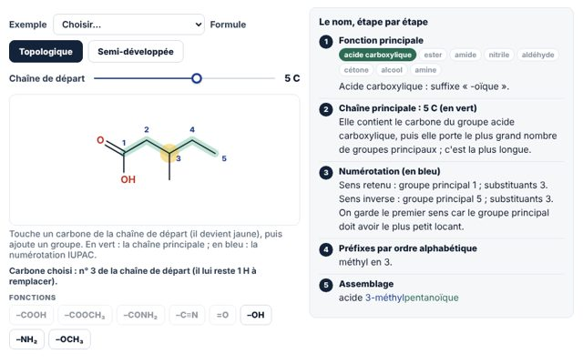
Chimie organiqueNommer une molécule organiqueConstruis la molécule et regarde son nom IUPAC se former étape par étape.
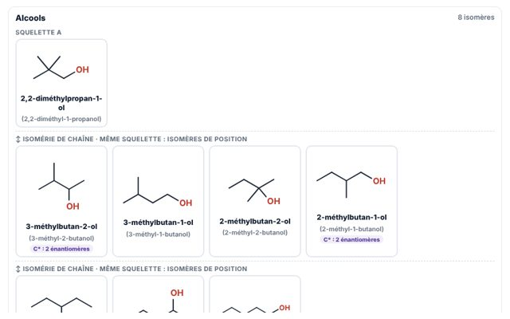
Chimie organiqueIsomères de constitutionUne formule brute, tous ses isomères : chaîne, position, fonction.
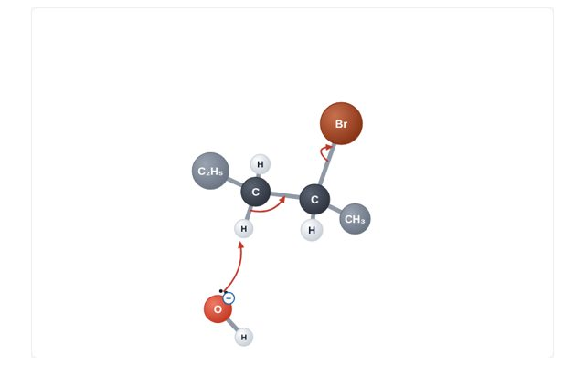
Chimie organiqueSN1, SN2, E1, E2Choisis substrat, nucléophile et solvant : le mécanisme se déroule sous tes yeux.
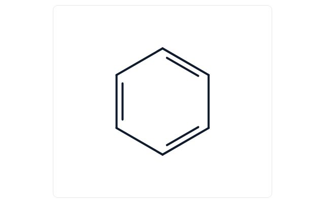
Chimie organiqueAromaticité et règle de HückelCompte les électrons π et décide : aromatique, antiaromatique ou non.
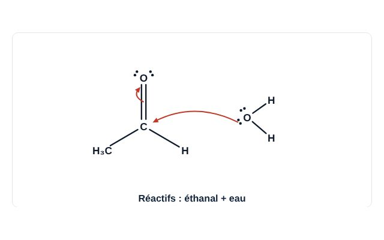
Chimie organiqueAldéhydes, cétones et dérivés d'acidesAddition nucléophile, réactivité des dérivés d'acides et oxydation des alcools.
Équilibres, cinétique et énergie5 simulations
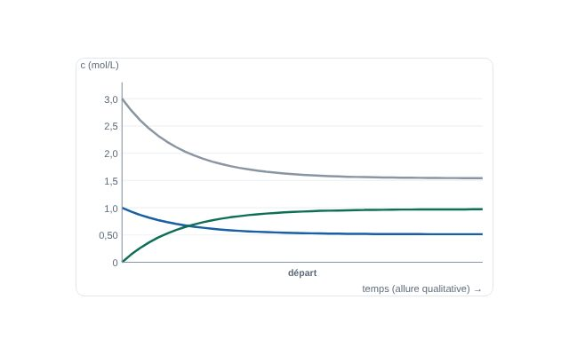
Équilibres, cinétique et énergieÉquilibre et Le ChatelierPerturbe l'équilibre et regarde Q rejoindre K.
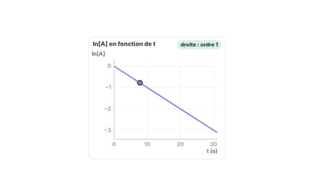
Équilibres, cinétique et énergieCinétique chimiqueOrdres, demi-vie, Arrhenius et catalyseur.
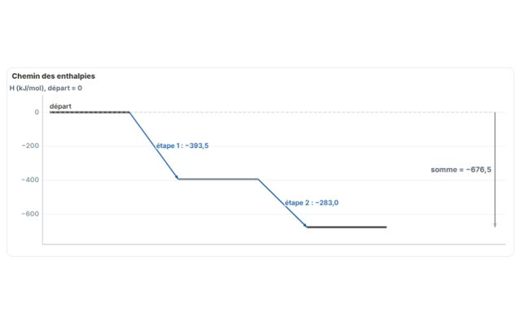
Équilibres, cinétique et énergieThermochimie et spontanéitéLoi de Hess, enthalpies de formation et ΔG = ΔH − TΔS.
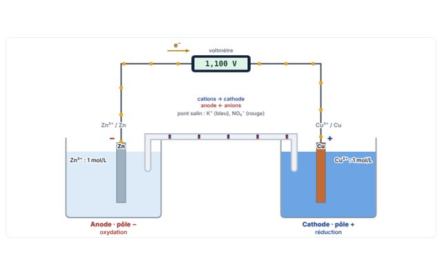
Équilibres, cinétique et énergiePiles et électrolyseConstruis une pile, calcule sa tension, puis passe en électrolyse.
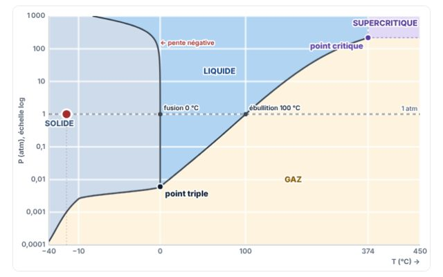
Équilibres, cinétique et énergieDiagramme de phasesDéplace le point (T, P) : solide, liquide, gaz et point critique.
Aucune simulation ne correspond à ta recherche.
Pour t'entraînerRappels théoriques, exercices corrigés et QCM, chapitre par chapitre.
Voir les exercices